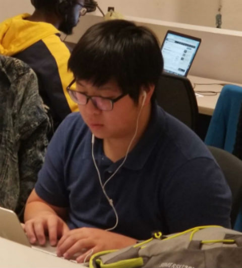
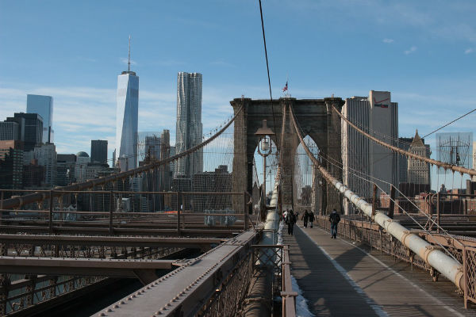

About Me

I like to think of myself as an adventurer, ready to trying new things and excited to tackle everyday challenges. This past November I started my journey to become a full stack web developer through the Laguardia CC Techhire Program.
Becoming a full stack developer allows me to exhibit my creative side and use websites as my canvas. Creating software and building websites that make a positive difference in the lives of many people is something I hope to achieve as a full stack web developer. Join me on my techhire journey!
Past Experiences

Employment History
| Years of Employment |
Title |
Company |
| 2018-2019 |
GIS Technician |
The Nature Conservancy |
| 2012-2016 |
Student |
City College |
My journey began with a background in biology and environmental research, which has helped shaped my interests and worldview such as in environmental stewardship.
My interests include learning about topics at the intersection of biology and technology like in medicine, healthcare and biotechnology. As an artist, I enjoy drawing, painting, and using different combinations of colors and textures to create interesting pieces.